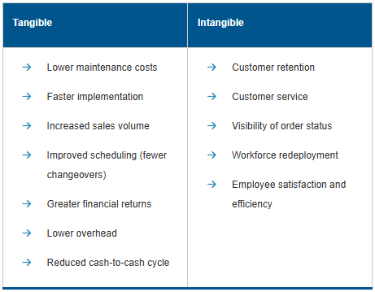

Technology analysis justifies investments in technology. Technology optimization is a key part of reaching a given stage of supply chain maturity and so is mapped here to the five stages of supply chain maturity. Advice on how to get to higher levels is also provided.
Supply Chain IT Benefit-Cost Analysis
For all the potential uses of technology, IT investments should be undertaken only if they result in a net gain for the organization. As such, the first assumption to make in an IT justification is that this is a business decision, not an IT project. New technology should be matched to the organization’s or supply chain’s goals and should create a strategic supply chain advantage. Note that most IT departments will expect the recipient of the technology to perform such a justification. The IT personnel can be used as expert resources but should not be expected to develop a business case. For supply chain technology, this is the supply chain manager’s responsibility.
If technology is poorly chosen or installed without thorough project management, it can result in a huge financial drain without generating the envisioned benefits. Many organizations have assumed significant financial risk by poorly planning and/or implementing IT projects.
Well-managed capital investments can generate returns in cost savings (in logistics, procurement, software systems, and overhead), greater market share, and new product and market innovations. Successful IT should make a company agile and resilient to change and disruption.
Tangible and Intangible Benefits
Credibility is the key to any cost justification, and past success lends strong credibility to a proposed IT investment. However, the past is not always an accurate predictor of the future. Moreover, making only investments that previously proved successful can stifle creativity and hamper business growth.
Benefits of IT investments can be both tangible and intangible. Tangible benefits can be broken down into direct, day-to-day savings and increases in working capital or available cash resulting from reductions in temporary assets such as inventory and accounts receivable. Intangible benefits are difficult or impossible to quantify, so they may place some strain on credibility.
Exhibit 2-3 displays some tangible and intangible benefits of successful IT investments.
Exhibit 2-3: Potential Benefits of IT Investments

When estimates are required to justify intangible benefits, the best method is to build a consensus rather than use an individual’s opinion. For example, IT that promises improvements in sales volume could include points such as
System visibility of order status increases responsiveness to customers.
Quality controls result in fewer returns and more customer satisfaction.
Faster processing increases transaction velocity, reducing lag times.
Note that Exhibit 2-3 lists workforce redeployment as an intangible benefit. Cost reductions promised by the ability to lay off employees should be treated with caution. Besides lowering employee morale, many such estimates prove incorrect; the firm may initially reduce the size of the workforce but eventually increase overall staff. As a consequence, it is advisable to position this predicted benefit as workforce redeployment.
Some nonfinancial benefits to consider include
Greater customer satisfaction as determined by customer service measures such as number of service calls or returns
Employee satisfaction measures such as reduced employee turnover (greater retention) and more positive responses to surveys
Efficiency measures such as increased orders processed per hour
Collaboration and visibility measures such as reduction of the bullwhip effect without an increase in stockouts.
Tangible and Intangible Costs
On the cost side, tangible, direct costs are straightforward. These include the direct costs of the IT project and ongoing service and maintenance, plus estimates for consulting fees, staff training and change management, resources assigned to the project, and opportunity costs. However, many IT projects are significantly over budget because managers
Overlook major cost items such as operational support costs.
Use estimates that assume everything will go according to plan.
Purposely underestimate costs to secure project approval.
Fail to invest in change management and/or training, which creates risks of high costs related to quality and deliverable acceptance.
If the initial estimates are optimistic and the project is over budget, both management and external investors will perceive the project as a failure.
If the initial estimates are optimistic and the project is over budget, both management and external investors will perceive the project as a failure.
The three basic categories of costs are capital expenditures, one-time project expenses, and ongoing support activities. Capital expenditures are amortized over the expected life of the technology. If this amortization period exceeds the actual product life, the costs will be underestimated. One-time project expenses often contain hidden costs such as fees to investigate alternatives, training travel, data conversion, or lost productivity when employees go through a learning curve. Ongoing support costs may include annual license fees or subscriptions, maintenance fees for vendor support, or internal costs for bug fixes, upgrades, taxes on fixed assets, and IT support staff. Analytical software may have additional costs such as the cost of generating mathematical or simulation models once the software is installed.
A final cost to consider is the cost of not implementing the project. Sometimes the costs of acquiring a new IT capability are outweighed by the greater (but intangible) costs of not doing so. For example, if a competitor creates a new business model using technology, failure to adapt may risk business failure.
Benefit-Cost Analysis and ROI
Exhibit 2-4 presents a benefit-cost ratio as well as a return on investment (ROI) ratio for an investment. Assume that a company implementing a new version of an enterprise resources planning (ERP) system has estimated total benefits at US$345,000 in tangible and intangible savings and performance increases over five years. The company has also tallied US$259,000 in tangible and intangible costs for five years.
Exhibit 2-4: Benefit-Cost Formula and Example

The benefit-cost ratio example indicates that for every dollar invested in the project over the five-year period, US$1.33 is returned. The ROI shows the same results from the perspective of net value created, which is 33 percent. Analysis time frames should be kept short due to the risk of technology obsolescence.
Technology Capabilities per Supply Chain Optimization Stage
An organization can design optimization into its information system plans. However, optimization requires a dose of reality. An organization’s staff may loyally and optimistically assume that the organization is at a high level of development, and this assumption may engender a failure to work toward optimization. Therefore, understanding what constitutes being in a particular stage of supply chain network optimization is critical.
Supply chain network technology optimization can be mapped to the stages of supply chain evolution that exist on a continuum. The range goes from traditional disconnected companies with adversarial external relationships (stage 1) to orchestrated virtual networks of companies (stage 5).
Supply chain optimization stages can be thought of as evolutionary rather than linear. Starting with basic material requirements planning (MRP), a supply chain continuously increases its sophistication in terms of manufacturing resource planning (MRP II) and enterprise resources planning (ERP), internal integration, supply chain planning, production scheduling, external integration, and so on. The top levels also assess process and human resources maturity, such as change readiness. An organization’s stage of supply chain optimization is important for benchmarking the supply chain against its competition. Note that different organizational divisions or an organization’s different supply chains may be at different levels of maturity. A given organization or area may also be more mature in some capabilities than in others.
Exhibit 2-5 and Exhibit 2-6 characterize the types of supply chain technology capabilities that should exist at a given stage of supply chain evolution.
Exhibit 2-5: Technology Capabilities for Lower Stages of Supply Chain Evolution

Exhibit 2-6: Technology Capabilities for Higher Stages of Supply Chain Evolution

Stage 1: Multiple Dysfunction
At the multiple dysfunction stage, firms may have multiple disconnected legacy MRP systems performing various transactional functions. These divisions follow the departmental barriers within the company. Communication often requires paperwork and data reentry. Note that MRP indicates the simplest process for determining net component requirements—a bill of material, a master schedule, and current on-hand/on-order data, and nothing more.
Drawbacks of stage 1 include multiple system bottlenecks, no supply chain leadership, minimal web capabilities, and little process flexibility. Systems cannot produce timely information, such as order status or lead time. Performance is either not measured, is inadequately measured, is measured but not applied, or is not aligned to company goals.
Functional areas will resist change, so change management is a must.
Organizations at this stage should focus on standardizing internal processes, becoming internet- and mobile-device-capable, and leveraging past continuous improvement efforts. Phased approaches are best, starting with the areas that can generate the greatest savings, such as procurement and logistics, each of which typically generates five to eight percent savings at this stage. Functional areas will resist change, so change management is a must.
Stage 2: Semifunctional Enterprise
At the semifunctional enterprise stage, many companies have completed manufacturing resource planning (MRP II) implementation and can demonstrate cross-functional integration of planning processes involving automated capacity planning. Internal optimization and corporate excellence break down functional silos, leading to interdepartmental trust and cooperation. Some companies have outsourced areas outside their core processes, and these outsource providers are their main external ties.
Stage 2 companies use documented processes and align key performance measures to goals. However, many companies at this stage have not leveraged their web capabilities. At most, they have functionally focused electronic business solutions such as an intranet site or trading in commodities and office supplies.
To move forward, companies at stage 2 should appoint a supply chain leader with experience in external integration. This leader needs executive support and the authority to break down barriers. The leader should start in areas that can be altered without reducing market performance, such as aggregating purchasing across the organization to receive volume discounts. Early successes will help when the leader is championing more painful but necessary process and culture changes. Optimization at this level usually focuses on lean strategies to cut transportation, warehousing, inventory, and equipment costs.
Stage 3: Integrated Enterprise
At the integrated enterprise level, companies have started point-to-point planning integration with the extended enterprise. They share real-time or near-real-time information and collaborate on forecasts between multiple divisions and first-tier customers and suppliers. Interactions with trading partners are usually still on a one-to-one basis. Some share best practices and the risks and rewards of collaboration. They likely use ERP and may use customer relationship management (CRM) or supplier relationship management (SRM) or both. The firm brings functional areas together in processes such as sales and operations planning with a focus on companywide processes.
Getting to stage 3 requires overcoming cultural and technical resistance to change. On the culture and process side, each party may view any ideas from external sources as inferior to internal ideas. On the technology side, many managers don’t know much about the technology enablers and fear loss of key data and the difficulty of linking to multiple different legacy and ERP systems.
To progress to and past this level often requires a visionary leader from a business unit to strengthen the efforts of the supply chain leader and the IT officer in developing these external integrations for the leader’s business unit.
Stage 4: Extended Enterprise
In stage 4, the supply chain becomes more of a supply network. Stage 4 networks engage in e-commerce and have automated and seamless information sharing, linked competitive vision, and common business objectives. They may also use collaborative planning, forecasting, and replenishment (CPFR®) to make plans jointly and may employ vendor-managed inventory for components or finished goods. New products are brought to market faster. Partners in these networks have risk- and reward-sharing contracts and other safeguards to ensure that everyone is motivated toward common goals. End-to-end integration provides total visibility and allows the network to function as a virtual company.
Companies at stage 4 use public or private internet exchanges to buy materials and services from and sell them to multiple sources. Much of the trading is automatic and unattended. They establish more formal partnerships and share talent.
Getting to this level requires sustained executive leadership and development of human and technological supply chain expertise. Another key to sustaining collaboration is a fully integrated performance measurement system that expresses the supply chain strategy and goals and can identify counterproductive elements. Technology links between partners should be seen as a continuous improvement initiative, and adaptable and scalable software solutions should be used when possible.
Stage 5: Orchestrated Supply Chain
In an orchestrated supply chain, talented cross-organizational and cross-functional teams determine a cohesive supply chain technology strategy and use their technical expertise as well as mature processes and well-trained people to ensure that prior and new technology investments are fully leveraged. Change management in particular is well-established, and teams receive the support they need, including through executive championship. The goal is true end-to-end visibility. Automation of repetitive processes should enable people to focus on exceptions, improvements, and relationships. While the prior stage also has many of these integration elements, reaching this stage means that the supply chain is realizing a competitive advantage from its supply chain technology investments, likely because, relative to competing supply chains, its technologies are better integrated and are state-of-the-art (e.g., use of blockchain and the Internet of Things for asset traceability).
For internet maturity, the supply chain’s web presence now uses improvements such as responsive design (i.e., site automatically scales to make mobile device use convenient). Comprehensive standards for cybersecurity are followed by all partners.
Integration and supply chain planning now routinely occur at the strategic and tactical levels. At the strategic level, supply chains harness big data and data analytics (especially predictive analytics) to provide decision makers with insights so decisions can be data-driven. These planning improvements also reach the tactical level. For example, many more suppliers now automatically receive end customer demand data so they too can improve their planning horizons and right-size their inventories. Organizations can now also drill down into tier 2 and tier 3 supplier information systems, such as to ensure supply of a difficult-to-source or restricted material. A category strategy can also be used for suppliers; this is basically an assessment of how much you need a given category of supplier and how much they need you. It is used to determine the appropriate levels of relationship and integration. Suppliers who cannot collaborate or integrate at the desired level may be given assistance or be replaced.
Supply Chain Network Optimization Strategy
Many companies become bogged down in their evolution through the stages of optimization. While companies may find it easy to see the value of working toward internal integration, they may be unwilling or unable to make the leap of trust involved in external integration.
Different divisions or businesses within a supply chain may be at different levels. Many companies move one or two business units into the next level and move more of the company or network only if successful. The lowest common denominator in the network may become the bottleneck preventing the system from advancing to the next level. For example, most large organizations now have ERP systems and other supply chain systems such as a warehouse management system, but this alone may not be enough to place an organization at a higher level. Rather, a majority of the items must be present to reach a higher stage of optimization.
To move between stages, companies must continually refine their strategies and develop new technologies. Optimization and innovation are never-ending goals. Competitive analysis may play an important role in motivating continued investments in supply chain network optimization.
As supply chains attain new stages of sophistication, the collaborative capacity of cross-enterprise management teams will mature in proportion to their stage. These teams will be better at soft skills such as building consensus as well as the technologies involved. This maturity cannot be gained except through experience. Because of this, and because of the great complexity involved in the planning and execution required to pass from one stage to the next, supply chains cannot skip stages.
The higher the collaborative capacity, the greater the demand for more enabling technology and new processes such as for transparency. Recognizing and responding to this demand drives further collaboration. It may be that the next opportunity for collaboration lies beyond linking the network and will only be clear when more companies have reached stage 4 (extended enterprise) or 5 (orchestrated supply chain).
Evolving a company into one of the higher stages begins with top management’s deciding to permit exchange of pertinent information across the supply chain. The starting point for getting to stage 4 is often one partnership that points the way toward the completely networked system. Internal resistance to change must be broken down. Only then can the company approach prospective partners with an inter-enterprise strategy. If other prospective members are also willing to explore collaboration, they establish a technical infrastructure. Members then work together over time to reach stage 5.
Determine the goals and the desired end state of the supply chain.
Create cross-functional and cross-business teams.
Organize the supply chain’s operational processes and IT’s mission.
Design in change management and training with stringent timetables for all parties. Measure results and provide feedback.
Create a conceptual model that will adequately explain the process and all of its elements.
Establish technical infrastructure.
Because cross-functional or ad hoc teams will be making more decisions, a culture shift and a shift in individual employee skill sets must occur. Supply chain network optimization requires that centralized and decentralized approaches be mixed to optimize the decision-making process. Teams perform collaborative centralized planning, but execution will be decentralized. Multiple management levels create integrated organizational structures.
Organizations wishing to form a strategy to get to the next stage first need teams to stay abreast of supply chain technology developments. This thinking should include how the technology would benefit them if they had it as well as if a competitor had it first. Second, organizations wishing to move to an inter-enterprise strategy must build a wide and deep knowledge base of all members of the supply chain network. Third, team-building training should stress a holistic viewpoint; that is, they should think of all members of the supply chain as if they were all in the same lifeboat. When cross-functional teams come from different nationalities and cultures, supply chain managers may need to educate team members to show proper sensitivity to cultural differences.
Role of Nucleus Firm and Cross-Functional Teams
Moving between stages is often facilitated or orchestrated by a nucleus firm or channel master. Because the nucleus firm is most likely the best-known name in the partnership or has its name on the products, it is ultimately responsible for customer satisfaction. Therefore, the nucleus firm will champion the cause, contact potential partners, perform a technology audit, and form teams with qualified partners across both functional and enterprise boundaries. This firm must also measure, monitor, and manage the supply chain across companies to make it appear seamless.
Common cross-functional and cross-business teams formed to support a supply chain management initiative include the following.
Executive team.
The executive team led by the nucleus firm sets the pace and strategic goals for collaboration and examines mutual strategies for market penetration.
Technology team.
The technology team examines requirements for databases, networking, software, and configuration, especially as regards communications and security for safe collaboration. It should be the first team formed, because the team must agree on methods of connecting systems and make these connections before other teams progress past the conceptual stage of network planning. The technology team works with the other teams to find types of information that would build mutual advantage. They analyze existing systems to determine actions to support strategic goals. This team should have representatives from the general IT functional areas (not just supply chain technology specialists) due to the need for cybersecurity and networking expertise.
Buying team.
This team examines leveraging combined network purchasing, procurement, and sourcing strategies.
Making team.
The making team examines collaborative improvements to manufacturing. Members may feel that their process is already optimal, and incremental steps must be taken to show the benefits of production collaboration.
Selling team.
The selling team examines marketing, sales, and customer service synergies to reduce cycle times and optimize order fulfillment and safety stock. Each partner’s customer base and segments reveal potential for cross-selling.
Inventory team.
The inventory team determines optimal total inventory and inventory turnover to show the benefits of collaboration.
Delivery team.
The delivery team examines total space against actual inventory. The team builds a consensus on logistics best practices, total asset use, use of Just-in-Time (JIT) or other inventory strategies, and network safety stocks.
External relationships will start out with collaboration meetings, followed by partial or pilot endeavors, and then standing and/or project-based team development. Relationships will move forward only when the technical foundations are in place and each party is given reasons to trust the others.
Once the initial connectivity project is complete, the network is at the beginning of stage 3 (integrated enterprise). Thereafter, the teams work toward continuous improvement. At stages 4 and 5, teams see the results of their labor, as real-time network communications are actively used by all cross-functional teams.
Click card to flip · Use arrows or shuffle to practise